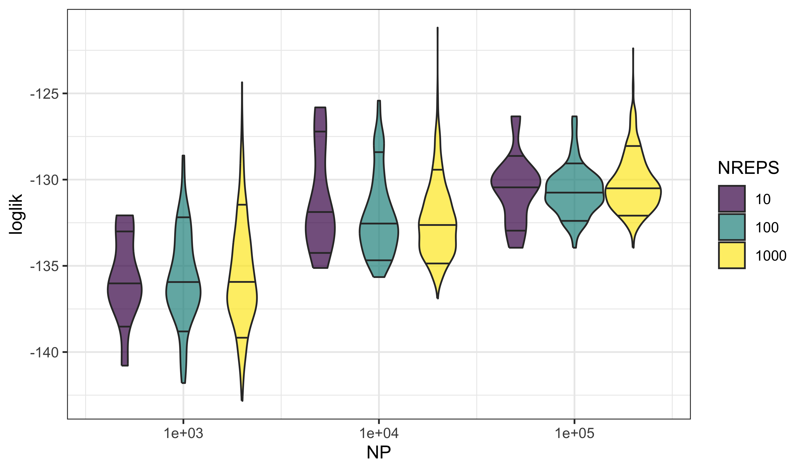
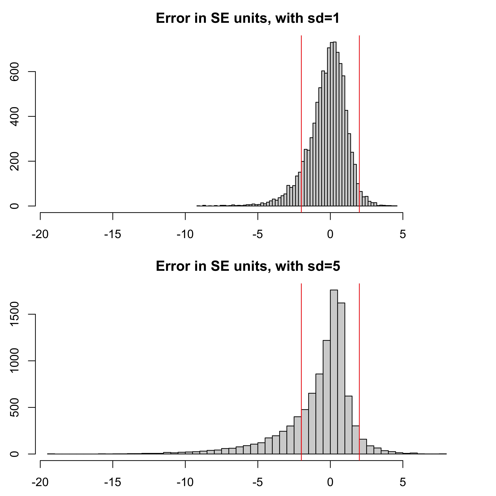

library(tidyverse)
library(pomp)
set.seed(1221234211)
source("model_measSIR.R")Worked solution to exercise 3.3: Precision and accuracy of particle-filter likelihood estimates
Problem statement
Desiderata for Monte Carlo log likelihood approximation include:
- Low Monte Carlo bias and variance
- Estimates of the bias and variance so that we know the extent of Monte Carlo uncertainty in our results
- Rapid computation
Set up a likelihood evaluation for the measSIR model, choosing the numbers of particles and replications so that your evaluation takes approximately one minute on your machine. Provide a Monte Carlo standard error for your estimate. Comment on the bias of your estimate. Optionally, take advantage of multiple cores on your computer to improve your estimate.
Solution
First, we construct the model we’ve been exploring in the Lesson.
Now, borrowing code from the notes, we run a few particle filtering operations.
NP <- 10000
NREPS <- 10
timer <- system.time(
pf <- replicate(
NREPS,
measSIR |> pfilter(Np=NP)
)
)
ll <- sapply(pf,logLik)
logmeanexp(ll,se=TRUE) est se
-130.096408 2.731696 This took 5.6 seconds.
Since the time taken is approximately linear in NP and NREPS, we get a formula (for this machine) of \[\mbox{Runtime}\approx \frac{ \mathrm{NP}}{10^{4}} \times \frac{\mathrm{NREPS}}{ 10} \times 5.6\mbox{sec}.\]
We can use this formula to select NP and NREPS to give an appropriate runtime.
Effects of NP and NREPS on estimates
Now, let us evaluate the dependence of log likelihood estimates on particle size and number of independent filters. We first set up a parallel computation environment.
library(doFuture)
library(iterators)
plan(multisession)
set.seed(594717807L)expand_grid(
rep=1:1000,
NP=c(1000,10000,100000)
) -> design
foreach (p=iter(design,"row"),
.combine=rbind,
.options.future=list(seed=TRUE)
) %dofuture%
{
library(pomp)
measSIR |> pfilter(Np=p$NP) -> pf
cbind(p,loglik=logLik(pf))
} -> llsWe use violin plots to display the distributions of log likelihoods as they depend on NP and NREPS.
expand_grid(
NREPS=c(10,100,1000),
lls
) |>
filter(rep<=NREPS) |>
ggplot(aes(x=NP,y=loglik,fill=ordered(NREPS),
group=interaction(NREPS,NP)))+
geom_violin(draw_quantiles=c(0.1,0.5,0.9),alpha=0.7)+
scale_x_log10(breaks=unique(lls$NP))+
labs(fill="NREPS",x="NP")
These plots reveal that one gets both more precise and more accurate estimates of the log likelihood by increasing the number of particles, NP. That is, the variability in the estimates decreases with increasing NP (precision) and the bias decreases as well (accuracy).
On the other hand, increasing the number of independent filtering operations, NREPS, does not improve the picture much. At best, we get a more accurate estimate of the variance. In practice, however, a rough estimate of the precision is usually good enough.
Considerations on combining log likelihood estimates and deriving standard errors
logmeanexp averages the replications on the untransformed scale, not the log scale. It provides a standard error.
On the untransformed scale, the particle filter gives an unbiased likelihood estimate, so logmeanexp gives an asymptotically consistent estimate of the log likelihood as NREPS increases toward \(\infty\).
Because the log function is concave down, Jensen’s inequality tells us that, as an estimate of the log likelihood, logmeanexp gives an estimate that is biased downward.
We can be quantitative about the bias via a Taylor series approximation. Write the Monte Carlo likelihood estimate as \((1+\epsilon)\,\mathcal{L}\), where the unbiasedness of the particle filter gives \(\mathbb{E}\left[{\epsilon}\right]=0\). Then, if \(\epsilon\) is small, \[\log\big((1+\epsilon)\,\mathcal{L}\big)\approx \log(\mathcal{L})+\epsilon-\epsilon^2/2,\] and so the bias in the log likelihood estimate is approximately half its variance.
Let’s examine the code for logmeanexp:
logmeanexpfunction (x, se = FALSE, ess = FALSE)
{
se <- isTRUE(se)
ess <- isTRUE(ess)
x <- as.numeric(x)
est <- .Call(P_logmeanexp, x, -1L)
if (se || ess) {
if (se) {
n <- length(x)
jk <- vapply(seq_len(n), function(k) .Call(P_logmeanexp,
x, k), double(1L))
xse <- (n - 1) * sd(jk)/sqrt(n)
}
if (ess) {
w <- exp(x - max(x))
xss <- sum(w)^2/sum(w^2)
if (se) {
c(est = est, se = xse, ess = xss)
}
else {
c(est = est, ess = xss)
}
}
else {
c(est = est, se = xse)
}
}
else {
est
}
}
<bytecode: 0x7ff5befec2f0>
<environment: namespace:pomp>We see that logmeanexp constructs its standard errors via a jack-knife calculation.
The standard errors from this approach are reasonable when the distribution of the likelihoods is not too skewed. However, a largest likelihood many log units higher than the others corresponds to a highly skewed distribution on the untransformed scale. It is on this untransformed scale that combining likelihood estimates by averaging is justified by the unbiased property of the particle filter. This could therefore lead to unstable standard errors.
Let’s consider an example for which we suppose that the Monte Carlo estimate of the log likelihood is normally distributed. This assumption has asymptotic justification (Bérard, Del Moral, and Doucet 2014). We’ll consider the two cases when the standard deviation on the log scale is given by sd=1 and sd=5.
sd1 <- replicate(10000,logmeanexp(rnorm(10,mean=0,sd=1),se=TRUE))
sd5 <- replicate(10000,logmeanexp(rnorm(10,mean=0,sd=5),se=TRUE))
m1 <- mean(sd1[1,])
t1 <- (sd1[1,]-m1)/sd1[2,]
m5 <- mean(sd5[1,])
t5 <- (sd5[1,]-m5)/sd5[2,]
x_range <- range(c(t1,t5))
par(mfrow=c(2,1))
par(mai=c(0.5,0.5,0.5,0.5))
hist(t1,breaks=50,xlim=x_range,main="Error in SE units, with sd=1")
abline(v=c(-2,2),col="red")
hist(t5,breaks=50,xlim=x_range,main="Error in SE units, with sd=5")
abline(v=c(-2,2),col="red")
The coverage of a simple \(\pm 2\) standard error confidence interval for the log likelihood (represented by the vertical red lines in the figure at \(\pm 2\) SE units) is 89.1 percent for the sd=1 case, but only 75.1 percent for the sd=5 case.
In particular, the left tail is long for the noisy likelihood estimates: when, by chance, you don’t observe a high likelihood value, you become over-confident that such values won’t happen.
These results suggest that logmeanexp standard errors are reasonably reliable when the standard deviation of the individual log likelihood estimates is around one, but should be interpreted cautiously if that standard deviation is much larger.
Produced in R version 4.4.0.
References
Bérard J, Del Moral P, Doucet A (2014). “A Lognormal Central Limit Theorem for Particle Approximations of Normalizing Constants.” Electron J Probab, 19(94), 1–28.